So far we have dealt with 0D models (lumped-parameter models) that do not explicitly represent spatial variation. We will start from the same fundamental principles of conservation and constitutive equations, but now we will explicitly represent spatial variation in the state variable(s) and fluxes. This will lead us to partial differential equations (PDEs) that govern the system. A PDE means that the state variable is differentiated with respect to more than one independent variable; that could be time and a spatial dimension (e.g. up-down). When we are dealing with a PDE, the derivatives are “partial”, and therefore we will change notation from the classic \(\frac{dC}{dt}\) to \(\frac{\partial C}{\partial t}\). From the \(\partial\), it is indicated that derivatives with respect to more than one independent variable appears in the equation.
Lets start with an example where we have a pipe with water flowing through it. Now we want to model the temperature of the water. The incoming water is cold and the pipe is warmed by some heat source. With a 0D model we would assume that the water is well mixed inside the entire pipe and therefore that the temperature of the water would be the same everywhere in Figure 7.1 A. In reality the fluid will have a lower temperature at the left side compared to the right side.
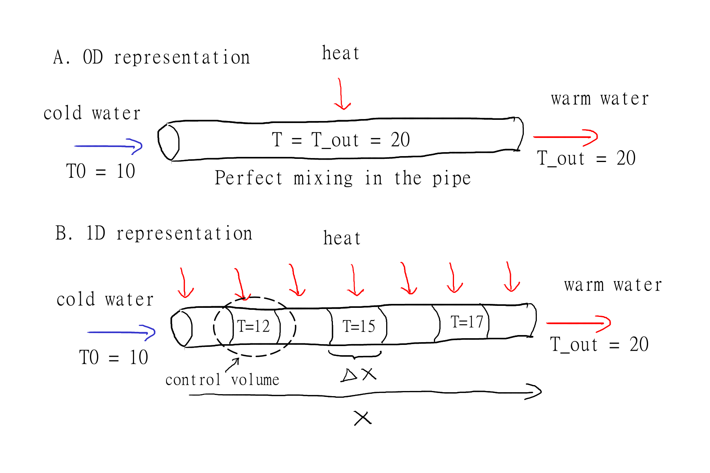
Figure 7.1: Water flowing through a constant-diameter round pipe at a constant flow rate with heat applied from outside.
We will model this temperature distributed along the pipe (x dimension) by splitting the pipe into multiple control volumes Figure 7.1 B and rather than a single conservation equation (0D), we will write a conversation equation for each control volume.
The energy flowing in and out of a control volumes shall now be represented by two different modes of energy transport that was already touched upon in Chapter 4, that is advection and diffusion (or conduction for heat/energy diffusion). Advection is the transport of energy by the bulk movement of the fluid. Heat diffusion is the transport of energy by random molecular motion. In the case of a 0D problem we did not distinguish between these processes because diffusion was absent (perfect mixing) implicitely assuming “in” and “out” was through advection. Now it is different and a conservation equation must be made for each control volume by considering flow of energy into and out of the control volume, as well as any heat generated within the control volume. The conservation equation for a control volume can be written as:
\[
\text{accumulation} = \text{adv}_{in} + \text{diff}_{in} - \text{adv}_{out} - \text{diff}_{out} + \text{generated} - \text{consumed}
\] Earlier in Chapter 4, we already showed that advection was the product of the superficial velocity and temperature difference over the length of the control volume (gradient). We now flip the sign of the temperature difference to be consistent with the direction of flow, which gives us: \[
\frac{\partial T}{\partial t} = v_x \cdot \frac{(T_{in} - T_{out})}{\Delta x} = -v_x \cdot \frac{(T_{out} - T_{in})}{\Delta x}
\] But we still need to add diffusion. Heat diffusion in and out of the control volume can be represented by Fourier’s law, \(q = -k \cdot \frac{dT}{dx}\), where q is the heat flux, k is the thermal conductivity and \(\frac{dT}{dx}\) is the temperature gradient. We multiply by the cross-sectional area \(A\), to get total energy flow rather than flux. But we are still dealing with the difference between flux over the length (\(\Delta x\)) of the control volume so rather than a temperature gradient we actually need the flux gradient. Starting from Equation 4.6 derived in Chapter 4: \[
\frac{\partial T}{\partial t} = \frac{\dot{Q}}{V \cdot {\rho} \cdot c_p} = \frac{\dot{Q}}{\Delta x \cdot A \cdot {\rho} \cdot c_p}
\] We now rewrite the energy flow \(\dot{Q}\) as the difference between the flux in and out of the control volume and substitute Fourier’s law for the fluxes. Then we multiply with \(A\) to go from fluxes to energy flows:
\[
\frac{\partial T}{\partial t} = \frac{q_{in} \cdot A-q_{out} \cdot A}{\Delta x \cdot A \cdot {\rho} \cdot c_p} = \frac{-k \cdot \frac{dT}{dx}_{in} -(- k \cdot \frac{dT}{dx}_{out})}{\Delta x \cdot {\rho} \cdot c_p} = \frac{k}{\rho \cdot c_p} \cdot \frac{\frac{dT}{dx}_{out} - \frac{dT}{dx}_{in}}{\Delta x}
\] Putting advection and diffusion together
\[
\frac{\partial T}{\partial t} = -v_x \cdot \frac{(T_{in} - T_{out})}{\Delta x} + \frac{k}{\rho \cdot c_p} \cdot \frac{\frac{dT}{dx}_{out} - \frac{dT}{dx}_{in}}{\Delta x}
\] Good! we now only miss the heat generated within the control volume, which we will just call S for source (that source could represent many things, which we will get into later). The governing equation for a control volume is then
\[
\frac{\partial T}{\partial t} = -v_x \cdot \frac{(T_{in} - T_{out})}{\Delta x} + \frac{k}{\rho \cdot c_p} \cdot \frac{\frac{dT}{dx}_{out} - \frac{dT}{dx}_{in}}{\Delta x} + S
\] Note that S is in units of temperature per time. In practice we are likely given S as some energy input \(Q\) in units of (energy per time) and thus we need to divide it by \(\Delta x \cdot {\rho} \cdot c_p\) to make units match.
Now we take the limit \(\Delta x \rightarrow 0\) and our equation becomes a partial differential equation (PDE).
The equivalent governing PDE for a 1D mass problem is
\[
\frac{\partial C}{\partial t} = -v_x \cdot \frac{\partial C}{\partial x} + D \cdot \frac{\partial^2C}{\partial x^2} + R
\tag{7.2}\]
Where \(R\) denotes mass added or removed (for example by reaction) and \(D\) is the diffusion coefficient. Note that the mass and energy governing equations have the same general form. Sometimes \(\frac{k}{\rho \cdot C_p}\) is noted as \(\alpha\) - the thermal diffusivity.
7.2 Coordinate systems
In Equation 7.1 and Equation 7.2 the Governing PDEs are derived with a single spatial dimension (x). In reality we have advection and diffusion in all three dimensions (x,y,z). For completeness we can write the 3D governing PDE for mass
where \(v_x\), \(v_y\) and \(v_z\) are the velocity components in the x, y and z direction, respectively.
We are now introducing a new term called, “coordinate system”. The above equations are written in rectangular (also called cartesian) coordinates (Figure 7.2), which is the most common coordinate system used in spatial models.
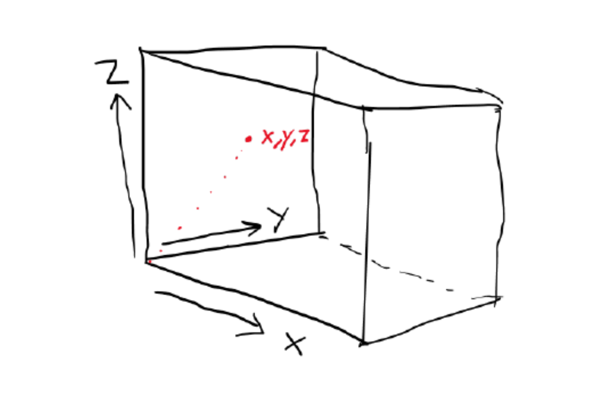
Figure 7.2: rectangular coordinate system, with three dimensions, x, y, z
However, there are other coordinate systems that can be used depending on the geometry of the problem. For example, if we are modeling a cylindrical pipe, it might be more convenient to use cylindrical coordinates (r, \(\theta\), z) instead of rectangular coordinates (x, y, z). Or if we have a sphere, spherical coordinates are a better choice. The choice of coordinate system can simplify the equations and make them easier to solve. Below are governing equations for cylindrical and spherical coordinates shown.
The governing equation for cylindrical coordinates for mass is
\[
\begin{align}
\frac{\partial C}{\partial t} &= -v_r \cdot \frac{\partial C}{\partial r} - v_\theta \cdot \frac{\partial C}{\partial \theta} - v_z \cdot \frac{\partial C}{\partial z}\\
& + D \cdot \left( \frac{1}{r} \cdot \frac{\partial}{\partial r} \left( r \cdot \frac{\partial C}{\partial r} \right) + \frac{1}{r^2} \cdot \frac{\partial^2C}{\partial \theta^2} + \frac{\partial^2C}{\partial z^2} \right)\\
&+ R
\end{align}
\] and for energy
Figure 7.4: Spherical coordinate system, with three dimensions, r, theta, phi
While these equations looks quite terrifying at first, we shall now see how we can reduce complexity. This will primarily be done by eliminating dimensions that are not important for the problem and by including only modes of transfer that is relevant to our problem.
##example case##
Lets continue with the example of water being pumped through a pipe in Figure 7.1 and assign it a cross sectional area, \(A\), of \(0.02~m^2\) a superficial velocity, \(v\), of \(0.5~m~s^{-1}\), a total pipe length of \(2~m\) and with heat being applied at a rate of \(1000~W\) distributed on the whole pipe.
Since a pipe is a cylinder we will choose cylindrical coordinates and start from Equation 7.5. There is flow along the length of the pipe and we are mainly interested in the development along this axis (\(z\) in cylindrical coordinates, but \(x\) in Figure 7.1). We assume that the flow is turbulent and well mixed in the radial (\(r\)) and angular (\(\theta\)) dimension. What does that imply? Well if it is well mixed, the derivate with respect to those dimensions are 0. We can therefore eliminate the terms in Equation 7.5 that includes derivatives with respect to \(r\) and \(\theta\), because they are equal to 0. This gets us to
Interesting, because that looks exactly like Equation 7.1, which was the governing equation for 1D and rectangular coordinates (except we call the dimension \(z\) rather than \(x\)). So we learned that the governing equations for 1D problems are similar for rectangular and cylindrical coordinates!
We have bulk flow along the z direction (because we are given a velocity, \(v\), in the problem). This corresponds to the advection term (\(-v\cdot\frac{dT}{dz}\)). What about diffusion? We know that diffusion always occurs, it is a law of nature that heat and mass spreads until there is no gradient. The question should rather be, is diffusion significant compared to the advection term here? We will get back to how we can estimate that, but for now we do not know, and therefore we keep the diffusion term (\(\frac{k}{\rho \cdot C_p}\cdot \frac{\partial^2T}{\partial z^2}\)). We also have heat being added to the system, which is the S term, but the unit is currently in \(W\). We will use the linking equation from Chapter 4 to get the unit in \(K s^{-1}\). We know that \(C_p\) of water is \(4180 \frac{J}{kg \cdot K}\) and the density \(\rho\) is \(1000~kg~m^{-3}\). The control volume, \(V = A \cdot \partial z\). So from Equation 4.5 we get the S term in correct units.
\[
\begin{align}
\frac{\partial T}{\partial t} &= \frac{\dot{Q}}{V \cdot \rho \cdot C_p}\\
&=\frac{1000~J~s^{-1}~}{(A\cdot \partial z) \cdot 1000 ~kg~m^{-3} \cdot 4180~J~kg^{-1}~K^{-1}}\\
&= \frac{1000 s^{-1}}{(0.02~m^2 \cdot m)\cdot 1000~m^{-3} \cdot 4180~K^{-1}}\\
&= \frac{1000~s^{-1}}{0.02\cdot 1000 \cdot 4180~K^{-1}}=0.012\cdot\frac{K}{s}
\end{align}
\] We know the thermal conductivity of water is \(0.6~W\cdot m^{-1} \cdot K^{-1}\). Then we plug it into our governing equation and check that units are consistent at the same time.
We have now reduced our problem to 1 dimension, and kept advection, diffusion, and the source term. Finally we have estimated the thermal diffusivity, \(\alpha = 1.435\cdot 10^{-7}~ m^2~s^{-1}\), the source term \(S = 0.012~K~s^{-1}\), and checked that units match for our governing equation.
From these steps you should now be able to construct the simplied governing equation of a problem. Convince yourself by now assuming the problem has only two modes of heat transfer 1) conduction in the radial dimension and 2) advection in the z dimension. You should reach the following equation
The part \(\frac{1}{r} \cdot \frac{\partial}{\partial r}\left(r \cdot \frac{\partial T}{\partial r}\right)\) can be tricky to interpret, but with the product rule of differentiation we can show that:
The later form might be easier to encode when we get to that. A similar problem will occurs for the spherical coordinate system, in which case the product rule can also be applied.
7.3 Method of lines and discretization
After arriving at our governing equation Equation 7.7 we still have a PDE with the partial derivatives on the right hand side of Equation 7.7. To get rid of these we will need to do discretization and we will use the method of lines for that.
With method of lines we choose to discretize the spatial derivatives and leave the time derivative as is. By discretizing we mean to approximate the derivative with a finite-difference (or similar spatial) approximation method at a fixed set of grid points that we will call “nodes”. In Figure 7.5 a grid with 5 nodes are shown, the distance between nodes are \(\Delta x\) and we can call the space between nodes for domains. Three nodes are interior, and the two nodes at x = 0 and x = L are the boundary nodes. This converts the original PDE into a system of 5 ODEs coupled in space and evolving in time — one ODE per spatial node. The boundary nodes are at the edge of our model domain (the space over which we apply the model) and these nodes needs special attention, which we will dive into in section Section 7.4.
There exists many alternatives to method of lines for solving PDEs numerically and some of them involve discretizing the time derivative as well. We will not do that with method of lines, but instead let standard ODE solvers (e.g. solve_ivp()) solve the time derivative. Now, how do these nodes relate to the control volume we discussed earlier? Here we shall imagine that a node, which is a point without any extension, represents the state of a control volume, where the control volume extends \(0.5~\Delta x\) on either size of the node. Flow of mass/energy in and out of a node comes from the neighboring nodes rather than the edges of the control volumes.
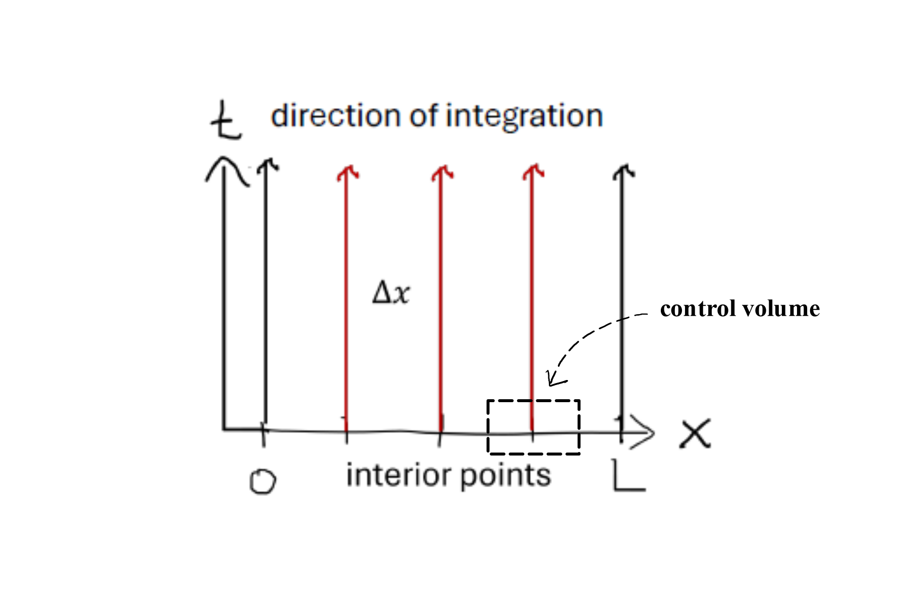
Figure 7.5: grid with a single ODE at each node according to method of lines
For the water flowing in a pipe problem the spatial derivatives are: \(\frac{\partial T}{\partial z}\) and \(\frac{\partial^2T}{\partial z^2}\). The time derivative \(\frac{\partial T}{\partial t}\) is left as is.
Remember from you numerical analysis course that finite difference could be either forward, backward or central difference, where the latter had a higher order of accuracy. Therefore we will use the finite central difference formula for the first and second derivatives. For general notation of these formulas we can write
Sometimes \(h\) is used to denote the step size (\(\Delta x\)), but this can be confusing if we are also discussing concepts related to the time step (where h is also frequently used). Now we can substitute Equation 7.8 and Equation 7.9 into Equation 7.6. We must remember to switch to the correct state variable and space derivative (T and z for our problem). This gives us:
Note that S, having no spatial derivative, passes through the discretization unchanged and is simply evaluated at each node.
If we apply our problem to only 5 nodes like in Figure 7.5 we should end up with 5 ODEs right? But we run into a problem at the boundary nodes, because our discretization involves nodes that are outside our grid! Therefore the boundary nodes should be handled differently and exactly how depends on the boundary conditions of our problem. We will discuss boundary conditions in depth in Section 7.4, but for now lets assume that the temperature is always 10 \(\degC\) at the left boundary (index 0). Because this is meant as a demonstration to how the ODEs are linked we will for simplicity remove advection and source terms. Remember the pipe is 2 m long, and 5 nodes means we must have one less domain, so \(\Delta z = 2~m/(5~nodes - 1) = 0.5~m\). We write ODEs for the interior nodes first:
\[
\begin{align}
&\frac{dT(0.5)}{dt} = \alpha \cdot\frac{T(0.5 + 0.5) - 2 \cdot T(0.5) + \color{red}{T(0.5 - 0.5)}}{0.5^2}\\
&\frac{dT(1.0)}{dt} = \alpha \cdot\frac{T(1.0 + 0.5) - 2 \cdot T(1.0) + T(1.0 - 0.5)}{0.5^2}\\
&\frac{dT(1.5)}{dt} = \alpha \cdot\frac{\textcolor{red}{T(1.5 + 0.5)} - 2 \cdot T(1.5) + T(1.5 - 0.5)}{0.5^2}\\
\end{align}
\] The terms written in red refers to the state variable at the boundaries. We assumed that \(T = 10 \degC\) at any time at the left boundary. This implies that the \(\frac{dT(0.0)}{dt} = 0\), because the temperature never changes here (it is always \(10 \degC\)). For the right end we did not specify anything, because the temperature here will be determined by how the ODE system evolves in time and space. But we need to change the central difference to a backward difference formula instead, since we otherwise have to use a node that is \(\Delta z\) outside our model domain! The general formula for backward difference of the second derivative is:
This gives us the 5 coupled ODEs and with information about boundary conditions included in red. Since we simplified the example by removing advection, we would need to apply finite difference formulas for the first derivative as well to solve the real problem. In Appendix B a complete overview of the finite difference formulas (backward, forward, central) are given for the first and second derivatives.
Implementation in Python
Lets now go to python to encode and solve the ODE system in Equation 7.10. We want to see something happening so lets assume that the water is \(0 \degC\) everywhere to stat with, except at the left side (\(10 \degC\)). We will run the simulation for 10 minutes.
# we need the following librariesimport numpy as npimport matplotlib.pyplot as pltfrom scipy.integrate import solve_ivp# first we define the model domainL =2# m, length of pipedz =0.5# m, step size in z dimension# now we make the gridz_grid = np.arange(0, L + dz, dz)# check length, which should be 5print(len(z_grid))# Other constantsk =0.6# W/(m K)Cp =4180# J/(kg K)rho =1000# kg/m3alpha = k/(rho * Cp) # m2/s# now we make a function that shall return the derivatives to solve_ivp# in numerical analysis course we called it the "rates" function. def rates(t, T, alpha, dz):# we need one ODE for each node. # we will initiate them as all being = 0 and then modify after dTdt = np.zeros(len(T))# for the left boundary we had dTdt = 0, so this one is OK already# But we can be explicit about it like below dTdt[0] =0# for the interior nodes we can use a for loopfor i inrange(1, len(T)-1):# now we write the general equation dTdt[i] = alpha * (T[i+1] -2*T[i] + T[i-1])/(dz**2)# for the right boundary we use the backward difference formula dTdt[-1] = alpha * (T[-1] -2* T[-2] + T[-3])/(dz**2)# then return dTdt to solverreturn dTdt# before calling solve_ivp, we need to specificy the initial conditions# We have 5 ODEs so we need five initial conditions.# the temperature is 0 everywhere except at the left side it is 10.T0 = np.full(len(z_grid), 0)T0[0] =10# Now we can call the solver, but we also need to specify the simulation time# units of our system is in seconds, so 10 min = 600 secondstmax =600out = solve_ivp(rates, t_span = [0, tmax], y0 = T0, method ="LSODA", t_eval = np.arange(0, tmax, 0.1), args = (alpha, dz))# the output should contain solutions of 5 ODEs # So when we want to plot, we need to know which spatial node (point in space)# we are interested in. We might be interested in the temperature of the water # when it comes out of the pipe. That would be the solution of the last ODE. # We can access that like this:end_point_temp = out.y[-1,:]# then plot itplt.plot(out.t, end_point_temp, label ="end of pipe")plt.xlabel('Time, seconds')plt.ylabel('Temperature, deg C')plt.show()
5
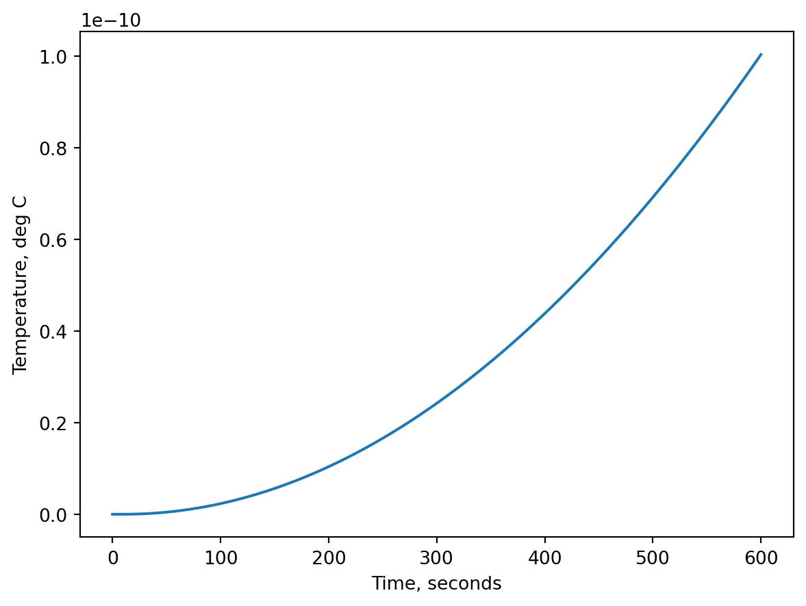
So the plot tells us that the temperature in the end of the pipe almost does not change (see y-axis 1e-11). This is not so strange because we only have heat transferred by conduction (from left) in the code, and we have not included the heat source (S) either. This hints to us that heat transfer by conduction is probably not so important in our case, but lets first try and implement advection and the source term as well. We will reduce simulation time to 20 seconds, which should be long enough to reach a steady state with a velocity of 0.5 m/s in a pipe that is only 2 m long.
However! For the advection term we would now be tempted to use central difference discretization in the interior nodes, simply because we know it has a higher order of accuracy than backward and forward difference. But here is a special case. For advection, which is a unidirectional phenomenon we must NEVER use information from downwind nodes to approximate the derivative (which is what central difference does). This will cause the solution to oscillate or be unstable, a topic that will be dealt more with in a later chapter. So we must in this case use backward difference for the advection to avoid that.
Code block 7.1: Water temperature in pipe by advection, conduction and source terms
# we need the following librariesimport numpy as npimport matplotlib.pyplot as pltfrom scipy.integrate import solve_ivpL =2# m, length of pipedz =0.5z_grid = np.arange(0, L + dz, dz)k =0.6# W/(m K)Cp =4180# J/(kg K)rho =1000# kg/m3alpha = k/(rho * Cp) # m2/s# need velocity for advection and source v =0.5# m/sS =0.012# K/sdef rates(t, T, alpha, v, S, dz): dTdt = np.zeros(len(T)) dTdt[0] =0for i inrange(1, len(T)-1):# we now add the advection and source term to the governing equation here# for advection we will use backward difference (even in interior points)# still central difference for the conduction. dTdt[i] = alpha * (T[i+1] -2*T[i] + T[i-1])/(dz**2) - v*(T[i] - T[i-1])/dz + S# for the right boundary we use the backward difference formula # for both conduction* and advection terms. dTdt[-1] = alpha * (T[-1] -2* T[-2] + T[-3])/(dz**2) - v*(T[-1] - T[-2])/dz + Sreturn dTdtT0 = np.full(len(z_grid), 0)T0[0] =10tmax =20out = solve_ivp(rates, t_span = [0, tmax], y0 = T0, method ="LSODA", t_eval = np.arange(0, tmax, 0.01), args = (alpha, v, S, dz))end_point_temp = out.y[-1,:]plt.plot(out.t, end_point_temp, label ="end of pipe")plt.xlabel('Time, seconds')plt.ylabel('Temperature, deg C')plt.show()# Is the heat source increasing the temperature over 10 deg C? print(f"The temperature at the outlet ends at {round(end_point_temp[-1], 3)} deg C")
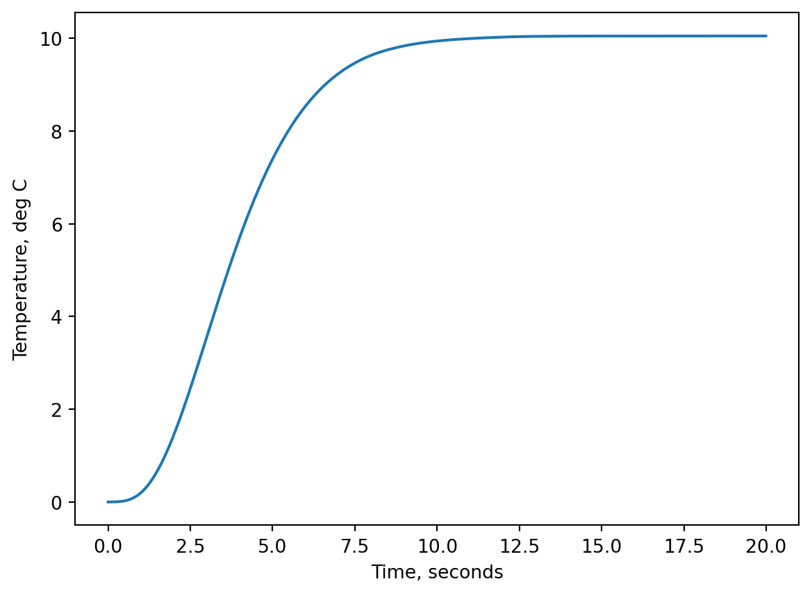
The temperature at the outlet ends at 10.048 deg C
The temperature at the end of the pipe stabilize around \(10 \degC\) after ~11 seconds. We see that the heat source only increases the temperature by \(~0.05 \degC\). So a much stronger heat source would be needed to get to the \(20 \degC\) in Figure 7.1. This implies that the source terms is not nearly strong enough to heat the water, which is continuously being replaced with incoming \(10 \degC\) water. Try to increase the Source term yourself to reach an outlet temperature of \(20 \degC\).
Extra note: we used backward difference for the conduction term at the right boundary. This is OK for this specific case, but is normally not done. However, here we had to do it because we have not introduced the concept of types of boundary conditions and how to encode them.
7.4 Boundary and initial conditions
We touched upon boundary conditions (BC) in Section 7.3, but without much explanation. For any problem with a derivative in time we must have an initial condition (IC), and if we have derivatives in space we also need BC. How many do we need?
You simply take you simplified governing equation and look for the highest order time derivative - that order would be the number of ICs needed. For the BCs you look for the highest order derivative of each spatial dimension, sum it up - that is the number of BCs needed to solve the problem.
Example case
You have derived the following governing equation for your problem
The highest order time derivative is 1. The highest order of spatial derivative with respect to z is 1 and the highest order of spatial derivative with respect to r is 2. Therefore we need 1 IC and 3 BCs to solve the problem. A 2D space representation of the problem is shown in Figure 7.6
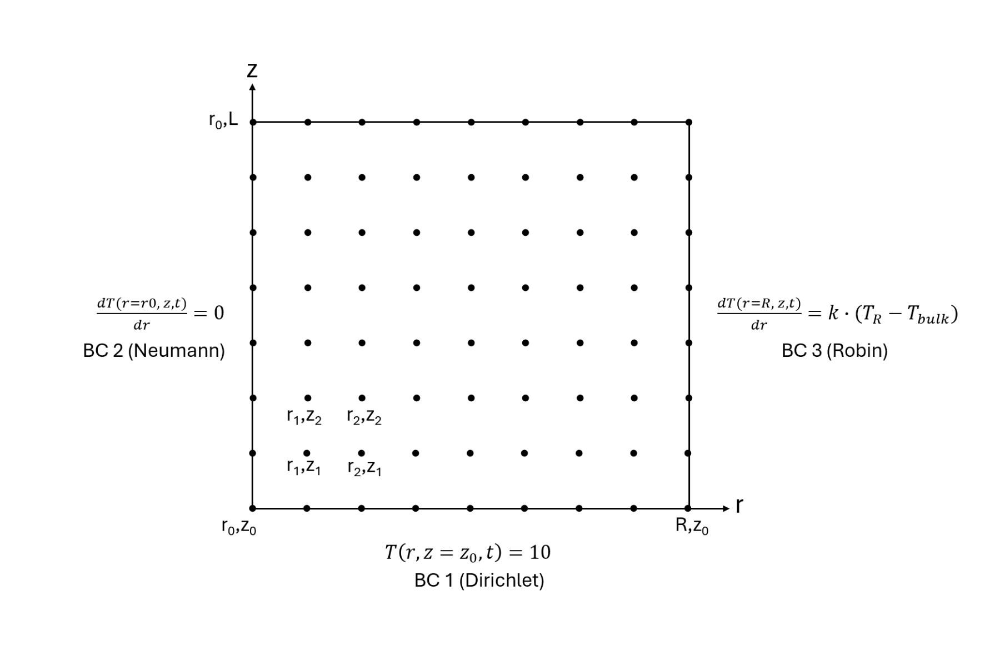
Figure 7.6: 2D grid representing model domain and boundary conditions
In Figure 7.6 we have 2 BCs on the r dimension (one in each end) and one BC for the z dimension (only at \(z = z_0\)). We cannot specify a BC at z = L, because that could (most certainly) create a conflict with the laws of physics, which is described by the ODE system. We see that BC1 in Figure 7.6 fixes the temperature to \(10 \degC\) all along r axis and at all times. Each node is described with an ODE. This means that even though we say there is one boundary condition at \(z = z_0\), when we implement it in our model code, we need to apply it to each ODE (it just appears to be formulated the same way!). The number of ODEs would depend on the step size along r, \(\Delta r\). For BC2 and BC3, the boundary conditions also apply to all the nodes with r = r0 and r = R, respectively. BC2 ad BC3 are different types of boundary conditions than BC1. Rather than specifying the value of the state variable (T), they specify something about the derivative (gradient) of the state variable (\(\frac{dT}{dr}\)). In BC2 the gradient is assigned a fixed value (0) and in BC3 the gradient is a function of the state variable at the boundary (\(T_R\)) and two constants, \(k\) and \(T_{bulk}\). We will get into details about these three types of BCs shortly as they are critical to formulate and solve a spatial model problem.
First notice that in two of the corners, \((r_0, z_0)\) and \((R, z_0)\), we have a potential conflict between BC1 and BC2 and BC1 and BC3, respectively. Here the modeller must make a choice, which BC should be satisfied or whether both needs to be satisfied at once. In addition we have all the ICs. All ODEs (all nodes in Figure 7.6, interior and boundaries) must have an IC. Again we see a potential conflict between BCs and ICs at the boundaries and the modeller must make a choice, which condition must be satisfied. This depends on your problem, but almost always the BCs overrule the ICs at the boundaries. In our pipe problem, we did exactly that - the initial temperature was set to 0 everywhere, except at the left side, where the BC had to be satisfied with a temperature of 10. We implemented this be incorporating the BC directly in our IC definition like this: T0 = np.full(len(z_grid), 0) and then T0[0] = 10.
Generally speaking there is no restrictions as to what type of BCs you can put at the boundaries For example two BCs of the same type are also allowed in the same dimension. The type of BCs needed will depends on the physical problem and what information you are given about. If the information is inconsistent or interpreted incorrectly, you can get conflicts between the BCs or conflicts with your physics. So lets learn how and when to use them.
7.4.1 Dirichlet boundary condition
The Dirictlet BC is also referred to as a BC of the first type. It describes the state variable value at the boundary. We already used it in the Figure 7.1 example, where we fixed the temperature at the left boundary to \(10 \degC\). For a 1D problem where \(c\) is the state variable, \(x\) is the spatial varible and \(t\) is time, the Dirichlet BC can be mathematically formulated as:
\[
c(x = a, t) = \alpha(t)
\]
where \(a\) is at the boundary, that is \(a = 0\) or \(a = L\) in Figure x. The right hand side, \(\alpha(t)\) implies that the value of the state variable at the boundary can depend on time, \(t\), but does not have to.
Example case
A model that predicts how oxygen concentration changes with time and with depth of a small pond. At the top boundary (surface of the water) the concentration of oxygen is in equilibrium with the atmospheric oxygen concentration. At this boundary the value (oxygen concentration) does not change if the air is constantly exchanged, which is the case if the wind blows just mildly. This situation would be well described with a Dirichlet BC. If we had put a closed chamber on top of the water, such that air could not be exchanged, then we could not do this because the concentration of oxygen in the air would decline over time as it diffuses into the water (assuming it was not saturated with oxygen already).
Implementation in Python
The Dirichlet BC can be enforced in many ways. Below is an example where it is enforced by setting the IC at the boundary equal to the BC. Inside the rates() function we initially set the derivatives at all nodes to 0 through this command dcdt = np.zeros_like(c). In the for loop we only loop through interior nodes, because the start index is 1 (range(1, len(c)-1)) and we stop before the last index. Hence dcdt[0] will stay as 0 (meaning change in c over change in time is zero) and effectively ensure that the state variable value at index 0 (the boundary node) never changes from its initial value. The initial value at index 0 is set to 10 in this command after the rates() function: c0[0] = 10. Because our for loop does not include the last index, it means that we also have a Dirichlet BC at the bottom (last index), which is 0 from this command: c0 = np.zeros(len(x_grid)). This may not be what we want for the model, unless something is instantly consuming oxygen at the bottom of the pond. Therefore we might have to handle the bottom boundary with a different type of BC, but for simplicity we will keep the Dirichlet BCs at both ends of the domain.
Code block 7.2: Oxygen diffusion in a pond with Dirichlet boundary conditions
# importing librariesimport numpy as npfrom scipy.integrate import solve_ivp import matplotlib.pyplot as pltL =0.1# depth of pond, m dx =0.001# spatial step size, mx_grid = np.arange(0, L + dx, dx) # x_gridD =2.0*10**-9# Diffusion coefficient, m2/s# function to describe the rate of change at every nodedef rates(t, c, D, dx): dcdt = np.zeros_like(c)# interior loop from index 1 to index n exclusivefor i inrange(1, len(c)-1): dcdt[i] = D * (c[i-1] -2*c[i] + c[i+1])/dx**2return dcdtc0 = np.zeros(len(x_grid)) # initial concentration at every node (is an array)c0[0] =10# at index 0 (surface of water) we change the initial concentration to the BC# 24 hourstmax =60*60*24*7# secondssol = solve_ivp(rates, t_span = [0, tmax], y0 = c0, method ="LSODA", t_eval = np.linspace(0, tmax, 100), args = (D, dx))times_to_plot = np.arange(0, tmax, tmax/10)# we make a for loop to plot the concentration at all depths, # and different lines for different timesfor t in times_to_plot: idx = np.argmin(abs(sol.t - t)) plt.plot(sol.y[:, idx], x_grid*100, label=f"t={sol.t[idx]/(60*60*24):.2f}")plt.xlabel("Conc, mg/L")plt.ylabel("Depth, cm")plt.gca().invert_yaxis()plt.legend()plt.show()
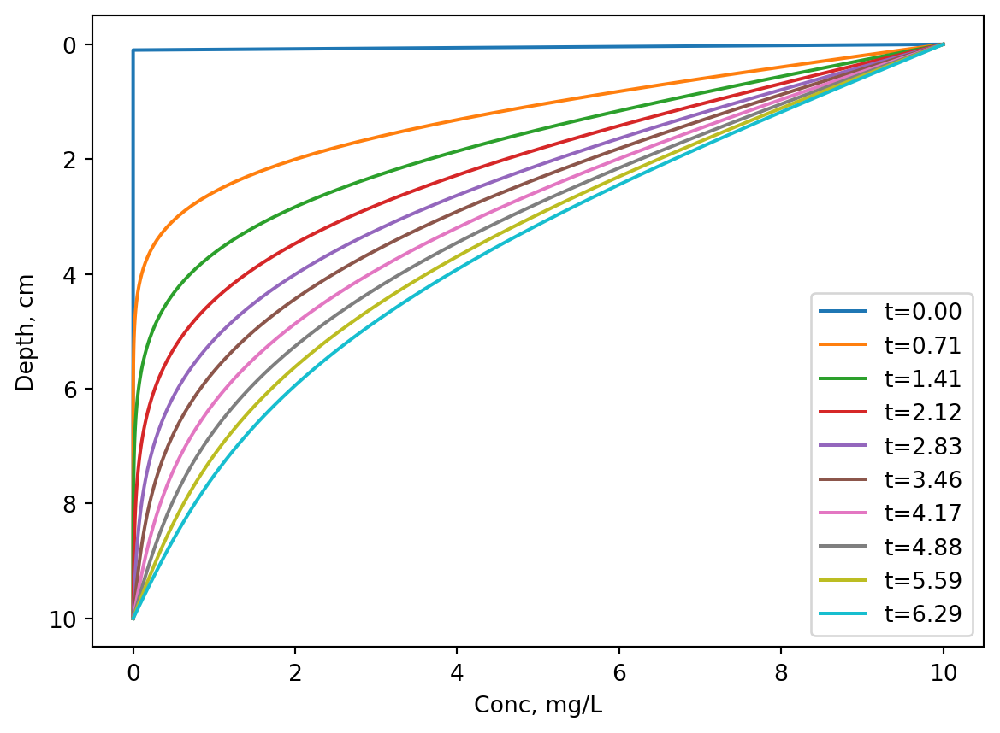
If another person was to read and understand this code, we could write the Dirichlet BCs more explicitly by adding dcdt[0] = 0 and dcdt[-1] = 0 inside the rates()function just below the dcdt = np.zeros_like(c) line. This would not change behavior of the code, but make interpretation easier for outsiders. In more complex model code, we may unintentionally change the dcdt at the boundaries and in that case being explicit about the boundary conditions would help preventing that.
Nevertheless we see that the profile converges towards a linear decrease in concentration from the surface to the bottom, which is expected from the fixed values of 10 and 0 (surface and bottom).
7.4.2 Neumann boundary condition
The Neumann BC is also referred to as a boundary condition of the second type. It describes the derivative of the state variable with respect to the spatial variable. Thus it is closely related to the flux, with the exception that it does not specify D (the diffusion coefficient for mass transfer) or k (the conductivity for heat transfer), but only the gradient. For a 1D problem where \(c\) is the state variable, \(x\) is the spatial varible and \(t\) is time, the Neumann BC can in general by formulated as:
\(\frac{\partial (x = a, t)}{\partial x} = \gamma(t)\),
where \(a\) is at the boundary of dimension \(x\), that is \(a = 0\) or \(a = L\), where \(L\) is the end boundary. The right hand side, \(\alpha(t)\) again implies that the value can depend on time, \(t\), but does not have to. A very useful and common Neumann BC would be:
\[
\frac{\partial (x = a, t)}{\partial x} = 0
\]
When the Neumann BC is 0, it represents typically one of two cases.
1) When the boundary is closed (mass can not get through the boundary) or insulated (heat can not flow through the boundary). This is a very common situation and would for example be a good choice for the bottom boundary in the previous example case with the pound.
2) When we are dealing with a symmetric problem where \(x = 0\) is a boundary e.g. in the middle of a sphere or cylinder that is symmetric around \(x = 0\). Symmetry is shown in Figure 7.7 with a tangent (gradient) of zero in the middle with r = 0. This BC is also the case BC2 in Figure 7.6 where \(r_0\) is in the middle of the cylindrical pipe in Figure 7.1.
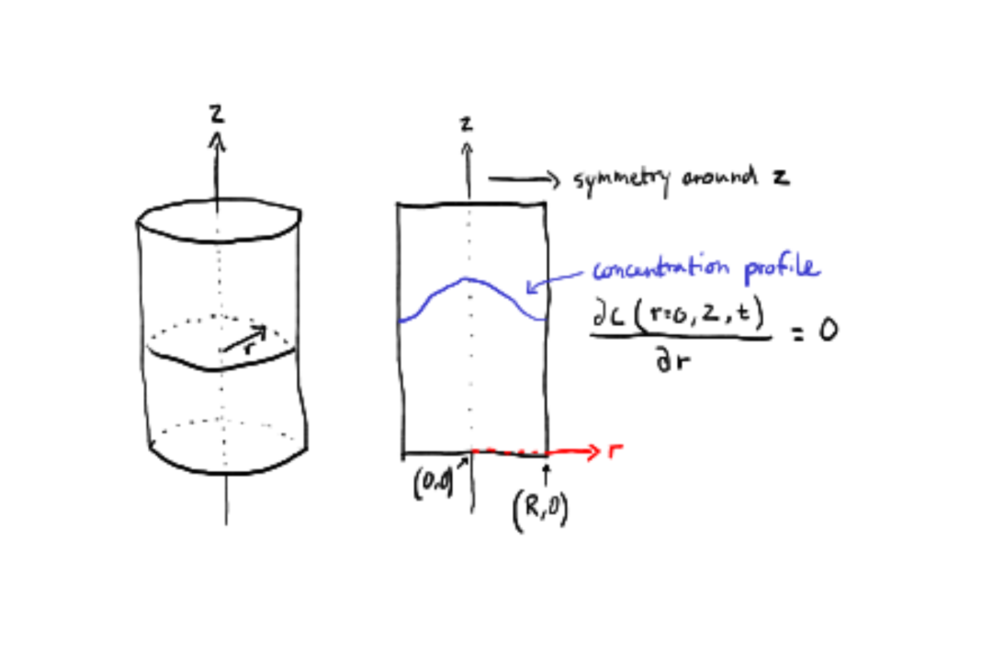
Figure 7.7: Pipe from from two perspectives, showing the concentration profile symmetry along the radial dimension
3) If you have a problem with both advection and diffusion/conduction. Heat or mass is leaving you system at the outlet boundary by advection, but not by diffusion/conduction. Then we could impose such a BC on the conduction or diffusion terms. This is really the type of BC we should have implemented at the right end in Listing 7.1.
Example case
Imagine we have a living room with a heated floor and the heat seeks upwards to the ceiling. To prevent heat loss through from the living room through the ceiling it is therefore build with a thick layer of polyurethane (which has a very low heat conductivity, that we will assume is 0 for the sake of this example). In this case we could assume there is no heat flux through the ceiling (at index L) and set the gradient to 0. The ceiling would be the top boundary and the BC could be formulated as below
\[
\frac{\partial T(x=L, t)}{\partial x} = 0
\]
At the boundary at the floor we could have a Dirichlet BC, because the floor temperature is maintained at a constant temperature of e.g. \(22 \degC\)
\[
T(x = 0, t) = 22
\]
Implementation in Python
In order to implement the Neumann BC we can use a trick that involves a concept called a ghost point. Lets start with \(\frac{\partial T(x=L, t)}{\partial x} = 0\) and replace the left hand side with the discretized form using finite central difference of the first derivative.
Here we encounter a problem, which is \(T(x_{L+1})\), because this is a point outside our model domain, since L is at the top boundary. We refer to this point as a ghost point. However, because the the LHS must be 0,
\[
T(x_{L+1}) = T(x_{L-1})
\]
In our governing equation with rectangular coordinates we have
\[
\rho C_p \frac{\partial T}{\partial t} = k \frac{\partial^2T}{\partial x^2} - v\frac{\partial T}{\partial x} + S
\]
We can eliminate the advection term (no bulk heat flow) and the S term and discretize the remaining conduction term.
This equation enforces the Neumann boundary condition at the top boundary, L. Earlier in Listing 7.1, we avoided the whole ghost point problematic by using backward difference instead and we did not state anything about a BC. But implicitely, by using the backward difference we silently just extrapolated the physics to outside the model domain. What does that mean? It means that there is no change in the second derivative and the BC was actually \(\frac{\partial^3 T}{\partial z^3} = 0\). The math to derive that is out of the scope for this book and we will not use such a BC again going forward.
Lets implement Neumann BC derived above in our code and assume that the living room is \(10 \degC\) to start with:
# importing librariesimport numpy as npfrom scipy.integrate import solve_ivp import matplotlib.pyplot as pltL =2.5# heigh of room, m dx =0.01# spatial step size, mx_grid = np.arange(0, L + dx, dx) # x_gridk =0.026# , J/(s * m * K)Cp =1006# J/(kg * K)rho =1.225# kg/m3# function to describe the rate of change at every nodedef rates(t, T, k, Cp, rho, dx): dTdt = np.zeros_like(T)# explicit showing that we have a Dirichlet BC at the bottom dTdt[0] =0# Neumann BC at the last boundary (last index is: -1) dTdt[-1] = k/(Cp*rho) * (2*T[-2] -2*T[-1])/dx**2# interior loop from index 1 to index n exclusivefor i inrange(1, len(T)-1): dTdt[i] = k/(Cp*rho) * (T[i-1] -2*T[i] + T[i+1])/dx**2return dTdtT0 = np.full(len(x_grid), 10) # initial temperature of 10 at every node T0[0] =22# at index 0 (floor surface) we change the initial temperature to the BC# 3 daystmax =60*60*24*3# secondssol = solve_ivp(rates, t_span = [0, tmax], y0 = T0, method ="LSODA", t_eval = np.linspace(0, tmax, 100), args = (k, Cp, rho, dx))step =0.5heights = np.arange(0, L + step, step)for h in heights: idx = np.argmin(abs(x_grid - h)) plt.plot(sol.t/(60*60*24), sol.y[idx], label=f"{h:.2f} m")plt.xlabel("Time, days")plt.ylabel("Temperature, deg C")plt.legend()plt.show()
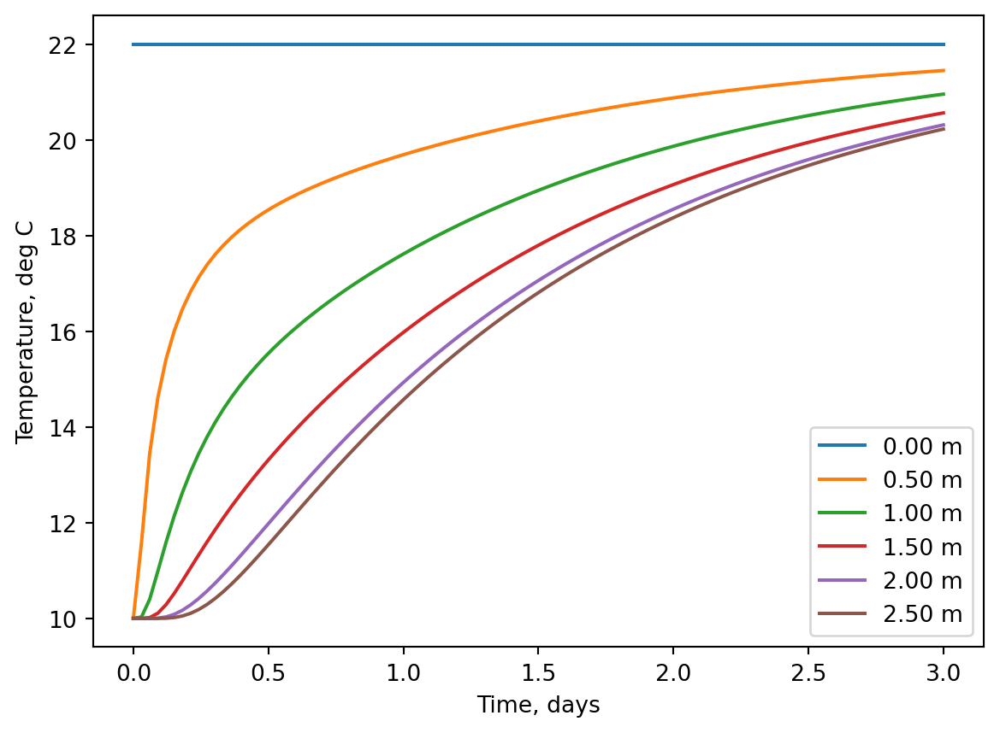
The higher up in the room, the longer it takes for the temperature to increase. It might seem a long time to heat up a living room, but the reason is that heat in our model only travels by conduction. In reality heat would seek upward and the air would mix by dispersion and convection as well.
7.4.3 Robin boundary condition
Robin boundary condition The Robin BC is also referred to as a boundary condition of the third type. Like the Neumann BC, it specifies something about the gradient at the boundary, but instead of fixing the gradient to a known value, it relates the gradient to the value of the state variable itself at the boundary — typically as a balance between flux leaving/entering the domain and exchange with the surroundings. For a 1D problem where \(c\) is the state variable, \(x\) is the spatial variable and \(t\) is time, the Robin BC can in general be formulated as:
\[
\frac{\partial c(x = a, t)}{\partial x}= f(x = a, t) - \alpha(x = a, t)\cdot c(x = a, t)
\] where \(f(x = a, t)\) and \(\alpha(x = a, t)\) are often just constants, but for generality, they are written here as being functions of \(x\) and \(t\). When dealing with heat transfer the Robin BC could for example represent Newtons law of cooling and for mass transfer it could represent the mass transfer coefficient approach.
\[
\begin{align}
& f(x=a, t) = 0 ~\\
& \alpha(x = a, t) = \frac{1}{D}\\
& c(x=a, t) = k_c \cdot(c(x=a, t) - c_{bulk})\\
\end{align}
\] Where \(c_{x=a}\) is the concentration at the boundary node, \(c_{bulk}\) is the concentration in the bulk outside the model domain, \(k_c\) is the mass transfer coefficient and \(D\) is the diffusion coefficient. Then the Robin BC becomes
\[
-D\frac{\partial c(x = a, t)}{\partial x}=k_c \cdot(c(x=a, t) - c_{bulk})
\] Which just means that at the boundary the change in concentration depends on the gradient between the boundary and the bulk. That is the mass transfer coefficient approach we already introduced in chapter 5. Similarly for heat we would end up with:
\[
-k\frac{\partial T(x = a, t)}{\partial x}=h \cdot(T(x=a, t) - T_{bulk})
\] With \(k\) being the thermal conductivity and \(h\) begin the heat transfer coefficient. We will be using these two Robin BCs frequently so
example case Lets go with an example with mass transfer now. We could have a well which contains contaminated water in the bottom, releasing toxic hydrogen sulfide. The hydrogen sulfide diffuses upwards to the edge of well. At the edge the hydrogen sulfide is carried away from the wind blowing at the top by convection. This is where we will have the Robin BC. At the bottom we will use a Dirichlet BC for simplicity.
Like for the Neumann BC we will with discretization with central difference have to handle a ghost point. This can be done in a similar manner by first discretizing the gradient so we get:
\[
-D\cdot \frac{\partial c(x = L, t)}{\partial x}= -D\cdot \frac{c(x_{L+1}) - c(x_{L-1})}{2 \cdot \Delta x} = k_c \cdot(c(x_L) - c_{bulk})
\] We now isolate the ghost point (\(c(x_{L+1})\))
\[
c(x_{L+1}) = -\frac{2 \cdot \Delta x\cdot k_c}{D} \cdot \left( c(x_L) - c_{bulk} \right ) + c(x_{L-1})
\] In our example the hydrogen sulfide is only transported by diffusion in the model domain. We will therefore substitute the ghost point in the discretized form of the diffusion term
This form can be encoded in Python, but we can show something neat about this equation by simplifying and rearranging to:
\[
\frac{2\cdot D}{\Delta x^2}\cdot \left( c(x_{L-1}) - c(x_L) \right )-\frac{2k_c}{\Delta x}\cdot \left( c(x_L) - c_{bulk} \right )
\] and it nicely parallels the Neumann result: the first term is the same diffusive exchange with the interior node (except now it is mass, not temperature as in Equation 7.11), and the second term is the new convective loss/gain at the boundary, vanishing as \(k_c \to 0\) (back to Neumann) and dominating as \(k_c \to \infty\) (forcing \(c_L \to c_{bulk}\), which is equivalent to a Dirichlet BC).
Implementation in Python
# importing librariesimport numpy as npfrom scipy.integrate import solve_ivp import matplotlib.pyplot as pltL =2.5# height of well, m dx =0.01# spatial step size, mx_grid = np.arange(0, L + dx, dx) # x_gridD =1.5*10**-5# Diffusion coefficient, m2/skc =1e-6# m/sc_bulk =0# there is no hydrogen sulfide in the bulk air# function to describe the rate of change at every nodedef rates(t, c, D, kc, c_bulk, dx): dcdt = np.zeros_like(c)# Dirichlet BC at the bottom dcdt[0] =0# Robin BC at top of well (last index is: -1)# first ghost point c_ghost =2*D/dx**2*(c[-2]-c[-1]) -2*kc/dx *(c[-1] - c_bulk) dcdt[-1] = D * (c_ghost -2*c[-1] + c[-2])/dx**2# interior loop from index 1 to index n exclusivefor i inrange(1, len(c)-1): dcdt[i] = D * (c[i-1] -2*c[i] + c[i+1])/dx**2return dcdtc0 = np.full(len(x_grid), 0) # initial concentration of 0 ppm c0[0] =1000# at index 0 (bottom of well where contaminated water is)# we change the initial conc to the BC (1000 ppm)# 3 daystmax =60*60*24*3# secondssol = solve_ivp(rates, t_span = [0, tmax], y0 = c0, method ="LSODA", t_eval = np.linspace(0, tmax, 100), args = (D, kc, c_bulk, dx))step =0.5heights = np.arange(0, L + step, step)for h in heights: idx = np.argmin(abs(x_grid - h)) plt.plot(sol.t/(60*60*24), sol.y[idx], label=f"{h:.2f} m")plt.xlabel("Time, days")plt.ylabel("Concentration, ppm")plt.legend()plt.show() f"after three days the concentration \of H2S at the top of the well is {sol.y[-1,-1]:.2f} ppm"
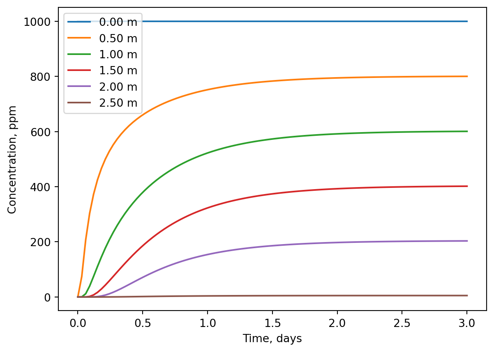
'after three days the concentration of H2S at the top of the well is 5.15 ppm'
7.5 Grid size and convergence
Discretization replaces continuous derivatives with finite differences, accuracy depends on \(\Delta x\), and we have been picking \(\Delta x\) somewhat arbitrarily in this whole chapter. But how do we know if a grid is “good enough,” and what’s the cost of making it finer?
There are two sides to this question, and they pull in opposite directions. On one hand, a finer grid (smaller \(\Delta x\) ) gives a more accurate approximation of the true continuous solution — this is the convergence question, and we will look at how to verify it empirically rather than just trusting it. On the other hand, computational cost increases as we refine the grid: more nodes means more equations to solve at every time step, and, as we will see, refining \(\Delta x\) can also force us to take much smaller time steps for the solution to remain numerically stable — particularly if we ever switch from solve_ivp’s adaptive solvers to a simple explicit scheme.
In other words, choosing a grid size is a balancing act between accuracy and cost, and the goal of this subsection is to give you the tools to make that choice deliberately rather than by guesswork: first by checking whether — and how fast — our solution converges as we refine the grid, and second by being aware of the stability constraints that link grid size to time step size.
example case We return to the pond example code in Listing 7.2. We want to compare the model with different \(\Delta x\). To compare runs meaningfully, we need a single number to track — not the entire concentration profile, but one quantity that we can follow as the grid changes. We will use the oxygen concentration at a fixed depth (5 cm) at the end of the simulation, t = 7 days. If our discretization is working correctly, this value should converge towards some fixed number as \(\Delta x\) gets smaller, rather than jumping around unpredictably.
import numpy as npfrom scipy.integrate import solve_ivpimport matplotlib.pyplot as pltL =0.1# depth of pond, mD =2.0*10**-9# diffusion coefficient, m2/stmax =60*60*24*7# 7 days, secondsdepth_of_interest =0.05# m, where we evaluate the solutiondef rates(t, c, D, dx): dcdt = np.zeros_like(c)for i inrange(1, len(c)-1): dcdt[i] = D * (c[i-1] -2*c[i] + c[i+1]) / dx**2return dcdtdef run_model(dx): x_grid = np.arange(0, L + dx, dx) c0 = np.zeros(len(x_grid)) c0[0] =10# Dirichlet BC at surface sol = solve_ivp(rates, t_span=[0, tmax], y0=c0, method="LSODA", t_eval=[tmax], args=(D, dx)) idx = np.argmin(abs(x_grid - depth_of_interest))return sol.y[idx, -1]dx_values = [0.02, 0.01, 0.005, 0.0025, 0.00125]results = [run_model(dx) for dx in dx_values]for dx, c inzip(dx_values, results):print(f"dx = {dx:.5f} m -> c(5 cm, 7 days) = {c:.5f} mg/L")# plottingplt.plot(dx_values, results, marker="o")plt.xlabel("$\\Delta x$, m")plt.ylabel("Conc. at 5 cm after 7 days, mg/L")plt.gca().invert_xaxis() # finer grids (smaller dx) on the rightplt.show()
dx = 0.02000 m -> c(5 cm, 7 days) = 2.18101 mg/L
dx = 0.01000 m -> c(5 cm, 7 days) = 3.06777 mg/L
dx = 0.00500 m -> c(5 cm, 7 days) = 3.06991 mg/L
dx = 0.00250 m -> c(5 cm, 7 days) = 3.07062 mg/L
dx = 0.00125 m -> c(5 cm, 7 days) = 3.07071 mg/L
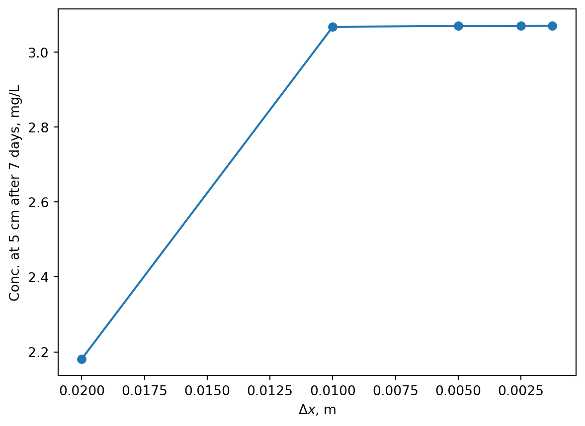
We see convergence around \(\Delta x = 0.01\), but it is clear that \(\Delta x = 0.02\) was not a good choice. There is no need to decrease \(\Delta x\) further than 0.01, this may increase simulation time for the two reasons mentioned before: smaller \(\Delta x\) increases the number of ODEs to be solved and solve_ivp() automatically also decreases the time step size to keep a stable solution. We can try and compare computation times with three different \(\Delta x\):
# -*- coding: utf-8 -*-import numpy as npfrom scipy.integrate import solve_ivpimport matplotlib.pyplot as pltimport timeL =0.1# depth of pond, mD =2.0*10**-9# diffusion coefficient, m2/stmax =60*60*24*7# 7 days, secondsdef rates(t, c, D, dx): dcdt = np.zeros_like(c)for i inrange(1, len(c)-1): dcdt[i] = D * (c[i-1] -2*c[i] + c[i+1]) / dx**2return dcdtdx_values = [0.01, 0.005, 0.001, 0.0005]runtimes = []for dx in dx_values: x_grid = np.arange(0, L + dx, dx) c0 = np.zeros(len(x_grid)) c0[0] =10# Dirichlet BC at surface start = time.perf_counter() sol = solve_ivp(rates, t_span=[0, tmax], y0=c0, method="LSODA", t_eval=[tmax], args=(D, dx)) elapsed = time.perf_counter() - start runtimes.append(elapsed)print(f"dx = {dx} m -> {len(x_grid)} nodes, runtime = {elapsed:.3f} s")plt.plot(dx_values, runtimes, marker="o")plt.xlabel("$\\Delta x$, m")plt.ylabel("Runtime, s")plt.xscale("log")plt.yscale("log")plt.gca().invert_xaxis() # finer grids (smaller dx) on the rightplt.xticks(dx_values, [str(dx) for dx in dx_values]) # force ticks at actual dx valuesplt.show()
dx = 0.01 m -> 11 nodes, runtime = 0.003 s
dx = 0.005 m -> 21 nodes, runtime = 0.006 s
dx = 0.001 m -> 101 nodes, runtime = 0.109 s
dx = 0.0005 m -> 201 nodes, runtime = 0.510 s
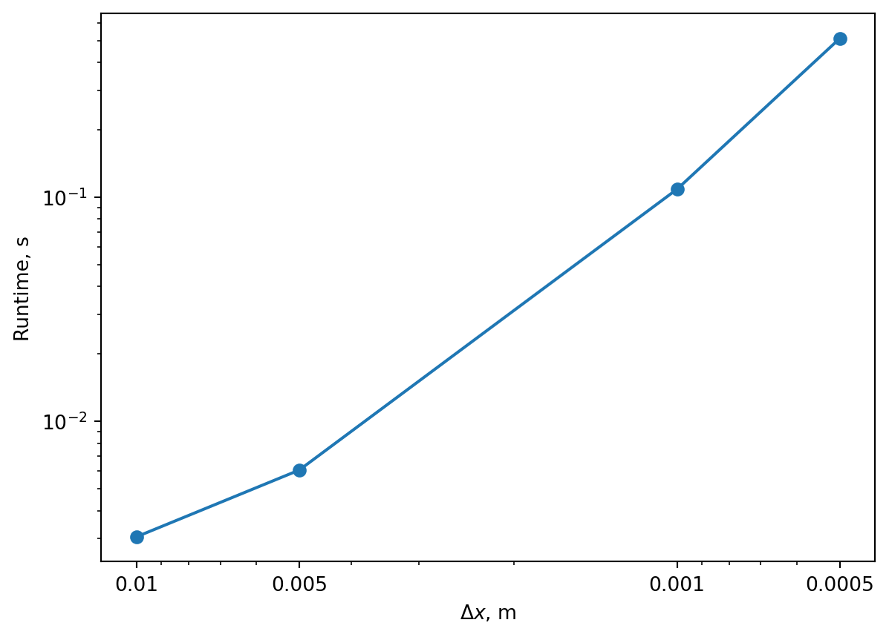
Notice the y-axis is log transformed and computation time increases exponentially with smaller \(\Delta x\), eventually becomming computationally infeasible. We could ask - but what if the time step was not adapted and kept constant? Well we cannot show that scenario directly, because the solvers automatically adjust the time step, but we can encode euler forward ourselves and see what happens and what is actually meant by stability.
Specifically for the euler forward applied to a diffusion problem in one dimension the stability criterion is:
\[
\Delta t \leq \frac{\Delta x^2}{2\cdot D}
\]
So for a \(\Delta x = 0.01\) we need the time step \(\Delta t\) to be 25000 s.
\[
\frac{\Delta x^2}{2\cdot D} = \frac{0.01^2}{2 \cdot 2.0 * 10^{-9}} = 25000
\] Lets replace solve_ivp with a nested euler forward loop with time steps below, above and exactly at the stability criterion.
# -*- coding: utf-8 -*-import numpy as npimport matplotlib.pyplot as pltD =2.0*10**-9# diffusion coefficient, m2/sL =0.1# depth of pond, mdx =0.01# m, just using 1 spatial step sizetmax =60*60*24*7# 7 days, secondsx_grid = np.arange(0, L + dx, dx)# max time step alloweddt_crit = dx**2/ (2*D)print(f"dx = {dx} m -> dt_crit = {dt_crit:.0f} s")# three time steps chosen, below, at, and above dt_critdt_values = [0.8* dt_crit, dt_crit, 1.2* dt_crit]labels = ["below criterion (stable)", "at criterion", "above criterion (unstable)"]# empty list for holding resultsresults = []# outer loop with different time steps chosenfor dt in dt_values: t_grid = np.arange(0, tmax + dt, dt) c = np.zeros((len(t_grid), len(x_grid))) c[0, 0] =10# Dirichlet BC at surface# looping through timefor i inrange(len(t_grid) -1):# first dimension is time, second dimension is spatial dimension x c[i+1, 0] =10# Dirichlet BC at surface, re-imposed every step# looping through x space in interior loopfor j inrange(1, len(x_grid) -1): c[i+1, j] = c[i, j] + dt * D * (c[i, j-1] -2*c[i, j] + c[i, j+1]) / dx**2 results.append(c)print(f"dt = {dt:.0f} s, {len(t_grid)-1} steps")fig, axes = plt.subplots(1, 3, figsize=(15, 4), sharey=False)# plotting profile after 7 days for three simulations using different time stepsfor ax, label, c inzip(axes, labels, results):# converting from m to cm. ax.plot(c[-1], x_grid *100) ax.invert_yaxis() ax.set_title(label) ax.set_ylabel("Depth, cm") ax.set_xlabel("Concentration, mg/L")plt.tight_layout()plt.show()
Here it is clear that exceeding the stability criterion results in nonsense output. Stability criteria for advanced Euler methods (like the ones used by solve_ivp) are out of scope for this course, but you should know that they exists and it is one of the reasons that simulation time blows up with small \(\Delta x\).